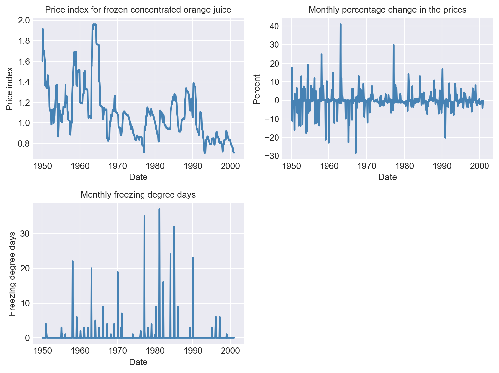
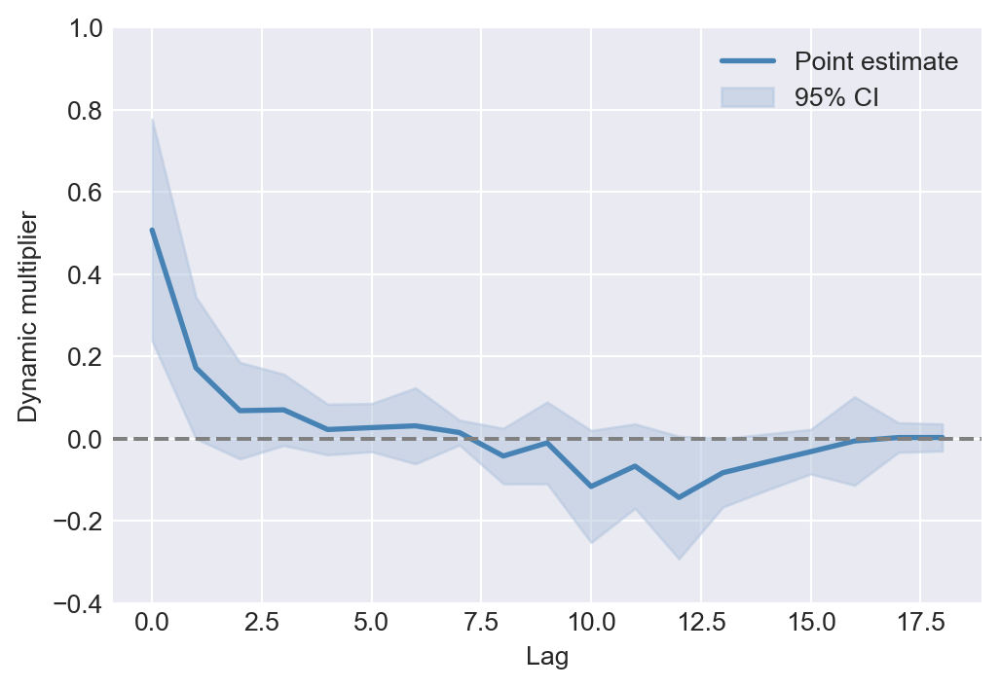
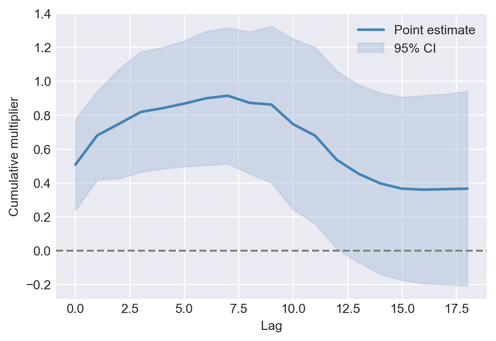
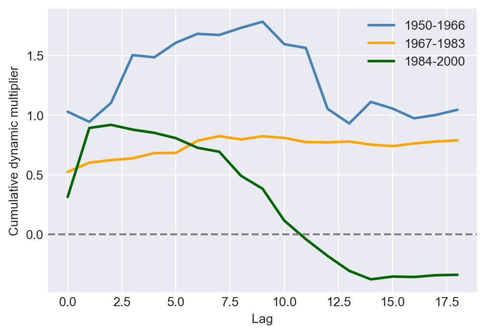

import numpy as np
import pandas as pd
import statsmodels.api as sm
import statsmodels.formula.api as smf
from statsmodels.iolib.summary2 import summary_col
import matplotlib.pyplot as plt
import seaborn as sns
from stargazer.stargazer import Stargazer
#plt.style.use('ggplot')
plt.style.use('seaborn-v0_8-darkgrid')26 Estimation of Dynamic Causal Effects
26.1 Dynamic causal effects
The dynamic causal effect of a regressor on a dependent variable is the causal effect of a change in the regressor on the dependent variable over time. For example, we may be interested in the effect of a change in the interest rate on the output of the economy in this quarter, next quarter, and four quarters ahead. Similarly, we may be interested in the effect of a change in the temperature on the demand for heating oil in the current month, next month, and two months ahead. In these examples, the dynamic effects take place over different time horizons, suggesting that our econometric model should include the current value and lags of the regressor. In this chapter, we use distributed lag models to estimate the dynamic causal effects of regressors on the dependent variable.
Definition 26.1 (Distributed lag model) The distributed lag model is a regression model that relates \(Y_t\) to the current value and lags of the regressor \(X_t\): \[ \begin{align} Y_t=\beta_0+\beta_1X_t+\beta_2X_{t-1}+\ldots+\beta_{r+1}X_{t-r}+u_t, \end{align} \tag{26.1}\] where \(u_t\) is the error term and the coefficients \(\beta_1,\ldots,\beta_{r+1}\) are called the dynamic multipliers.
In Equation 26.1, the dynamic multipliers measure the dynamic causal effects:
- \(\beta_1\): the impact effect of a one-unit change in \(X_t\) on \(Y_t\).
- \(\beta_2\): the impact effect of a one-unit change in \(X_{t-1}\) on \(Y_t\), or equivalently, the impact of one-unit change in \(X_t\) on \(Y_{t+1}\).
- In general, \(\beta_{j+1}\) is the impact effect of a one-unit change in \(X_{t-j}\) on \(Y_t\), or equivalently, the impact of a one-unit change in \(X_t\) on \(Y_{t+j}\).
Definition 26.2 (Dynamic causal effect) The dynamic causal effect of a one-unit change in \(X\) on \(Y\) is the sequence of coefficients \(\beta_1,\ldots,\beta_{r+1}\) in Equation 26.1.
Definition 26.3 (Cumulative dynamic multipliers) The \(h\)-period cumulative dynamic multiplier is the sum \(\beta_1+\beta_2+\ldots+\beta_{h+1}\). The sum of all the individual dynamic multipliers, \(\beta_1+\beta_2+\ldots+\beta_{r+1}\), is the cumulative long-run effect of a change in \(X\) on \(Y\) and is called the long-run cumulative dynamic multiplier.
If there are multiple regressors \(X_1,\ldots,X_k\), then the distributed lag model that relates \(Y_t\) to \(r_1\) lags of \(X_1\), \(r_2\) lags of \(X_2\), and so on is given by \[ \begin{align} Y_t&=\beta_0+\beta_{11}X_{1t}+\beta_{12}X_{1,t-1}+\ldots+\beta_{1,r_1+1}X_{k,t-r_1}\\ &+\beta_{21}X_{2t}+\beta_{22}X_{2,t-1}+\ldots+\beta_{2,r_2+1}X_{2,t-r_2}\\ &+\ldots+\beta_{k1}X_{kt}+\beta_{k2}X_{k,t-1}+\ldots+\beta_{k,r_k+1}X_{k,t-r_k}+u_t. \end{align} \tag{26.2}\]
In Equation 26.2, the dynamic multipliers \(\beta_{11},\ldots,\beta_{1,r_1+1}\) measure the dynamic causal effects of \(X_1\) on \(Y\), the dynamic multipliers \(\beta_{21},\ldots,\beta_{2,r_2+1}\) measure the dynamic causal effects of \(X_2\) on \(Y\), and so on. Using these dynamic multipliers, we can also determine the \(h\)-period cumulative dynamic multipliers and the long-run cumulative dynamic multipliers for each regressor.
26.2 Estimation of dynamic causal effects with exogenous regressors
We can use the OLS estimator to estimate distributed lag models. The assumptions required for the OLS estimation are stated in the following callout block.
The exogeneity assumption requires that \(u_t\) has a conditional mean of zero given the current and lagged values of the regressor. In particular, under this assumption, \(\E(u_t|X_t, X_{t-1}, X_{t-2}, \ldots,X_{t-r}) = 0\) holds, suggesting that \(u_t\) is uncorrelated with the included regressors. This assumption is also called the past and present exogeneity assumption. There is also a strong version requiring that \(\E(u_t|\ldots,X_{t+2},X_{t+1},X_t,X_{t-1},X_{t-2},\ldots)=0\). This version is called the strict exogeneity assumption or the past, present, and future exogeneity assumption. This assumption implies that \(u_t\) is uncorrelated with the past, current and future values of \(X\).
The second assumption requires that \((Y_t, X_t)\) have a joint stationary distribution and to be weakly dependent. This assumption is the same as the one required for the OLS estimation of the AR and ADL models considered in Chapter 25.
The third assumption requires that the dependent variable and the regressor have more than eight nonzero finite moments. This assumption is stronger than the one required for the OLS estimation of the AR and ADL models, where we require only nonzero finite fourth moments. This relatively strong assumption in the distributed lag model is required for formulating a heteroskedasticity- and autocorrelation-consistent (HAC) standard error estimator. We discuss the HAC standard error estimator in the next section.
The fourth assumption, no perfect multicollinearity, is the same as the one required in the multiple linear regression model.
Theorem 26.1 (Properties of OLS estimator using time series data) Under these four assumptions, the OLS estimator is consistent and has an asymptotic normal distribution when \(T\) is large. Therefore, inference on the regression coefficients using the OLS estimator proceeds as usual.
We can reformulate the distributed lag model in Equation 26.1 such that it is suitable to directly estimate the cumulative dynamic multipliers. We start with a distributed lag model that has only one lag of the regressor \(X_t\). By adding and subtracting \(\beta_1X_{t-1}\), we can rewrite the model as \[ \begin{align*} Y_t&=\beta_0+\beta_1X_t+\beta_2X_{t-1}+u_t=\beta_0+\beta_1X_t-\beta_1X_{t-1}+\beta_1X_{t-1}+\beta_2X_{t-1}+u_t\\ &=\beta_0+\beta_1(X_t-X_{t-1})+(\beta_1+\beta_2)X_{t-1}+u_t\\ &=\delta_0+\delta_1\Delta X_t+\delta_2X_{t-1}+u_t, \end{align*} \] where \(\delta_0=\beta_0\), \(\delta_1=\beta_1\), and \(\delta_2=\beta_1+\beta_2\), which is the first cumulative multiplier.
We generalize this reformulation to the distributed lag model with \(r\) lags of the regressor \(X_t\). Thus, we can rewrite Equation 26.1 as \[ \begin{align} Y_t&=\delta_0+\delta_1\Delta X_t+\delta_2\Delta X_{t-1}+\ldots+\delta_{r} \Delta X_{t-r+1}+\delta_{r+1}X_{t-r}+u_t, \end{align} \tag{26.3}\] where \(\delta_1,\ldots,\delta_{r+1}\) are the cumulative dynamic multipliers. The relationship between the coefficients in Equation 26.1 and Equation 26.3 is given by \[ \begin{align} &\delta_0=\beta_0,\\ &\delta_1=\beta_1,\\ &\delta_2=\beta_1+\beta_2,\\ &\vdots\\ &\delta_{r+1}=\beta_1+\beta_2+\ldots+\beta_{r+1}. \end{align} \] Thus, the \(h\)-period cumulative dynamic multiplier is \(\delta_h\). We can use the OLS estimator to estimate Equation 26.3 and formulate hypothesis tests and confidence intervals for the cumulative dynamic multipliers.
26.3 Heteroskedasticity- and autocorrelation-consistent (HAC) standard errors
The error terms in distributed lag models can be autocorrelated. Although the OLS estimator still remains unbiased and consistent, the OLS standard errors are not valid in the presence of autocorrelation. To address this issue, we use the heteroskedasticity- and autocorrelation-consistent (HAC) standard error estimator.
For simplicity, we consider the following distributed lag model without any lag terms: \[ Y_t=\beta_0+\beta_1X_t+u_t. \] Let \(v_t=(X_t-\mu_{X})u_t\) and \(\bar{v}=\frac{1}{T}\sum_{t=1}^Tv_t\). Then, the OLS estimator \(\hat{\beta}_1\) of \(\beta_1\) can be written as \[ \begin{align} \hat{\beta}_1-\beta_1&=\frac{\frac{1}{T}\sum_{t=1}^T(X_t-\bar{X})u_t}{\frac{1}{T}\sum_{t=1}^T(X_t-\bar{X})^2}\approx\frac{\frac{1}{T}\sum_{t=1}^T(X_t-\mu_{X})u_t}{\sigma^2_X}\\ &=\frac{\frac{1}{T}\sum_{t=1}^Tv_t}{\sigma^2_X}=\frac{\bar{v}}{\sigma^2_X}, \end{align} \] where the approximation follows from \(\bar{X}\xrightarrow{p}\mu_{X}\) and \(\frac{1}{T}\sum_{t=1}^T(X_t-\bar{X})^2\xrightarrow{p}\sigma^2_X\). Since \(v_t\) is autocorrelated, we have \[ \begin{align} \var(\bar{v})&=(\var(v_1)+\cov(v_1,v_2)+\ldots+\cov(v_1,v_T)\\ &+\cov(v_2,v_1),\var(v_2),\ldots,\cov(v_2,v_T)\\ &+\ldots\\ &+\cov(v_T,v_1),\cov(v_T,v_2),\ldots,\var(v_T))/T^2. \end{align} \] We can express \(\var(\bar{v})\) as \[ \begin{align} \var(\bar{v})&=(T\var(v_t)+2(T-1)\cov(v_t,v_{t-1})+2(T-2)\cov(v_{t},v_{t-2})+\ldots+2\cov(v_t,v_{t-T+1}))/T^2\\ &=\frac{\sigma^2_v}{T}f_T, \end{align} \] where \(\sigma^2_v\) is the variance of \(v_t\) and \(f_T=1+2\sum_{j=1}^{T-1}(\frac{T-j}{T})\rho_j\) with \(\rho_j=\corr(v_t,v_{t-j})\). Thus, we can write the variance of the OLS estimator as \[ \begin{align} \sigma^2_{\hat{\beta}_1}=\var(\hat{\beta}_1)=\left(\frac{\sigma^2_v}{T(\sigma^2_X)^2}\right)f_T. \end{align} \] Using this last expression, we can formulate the HAC estimator of the variance of the OLS estimator as \[ \begin{align} \tilde{\sigma}^2_{\hat{\beta}_1}=\hat{\sigma}^2_{\hat{\beta}_1}\hat{f}_T, \end{align} \tag{26.4}\] where \(\hat{\sigma}^2_{\hat{\beta}_1}\) is the heteroskedasticity-robust estimator of the variance of \(\hat{\beta}_1\) given in Chapter 15 in the absence of autocorrelation. The second term \(\hat{f}_T\) is an estimator of \(f_T\) given by \[ \begin{align} \hat{f}_T=1+2\sum_{j=1}^{m-1}\left(\frac{m-j}{m}\right)\tilde{\rho}_j, \end{align} \] where \(\tilde{\rho}_j=\sum_{t=j+1}^T\hat{v}_t\hat{v}_{t-j}/\sum_{t=1}^T\hat{v}^2_t\), \(\hat{v}_t=(X_t-\bar{X})\hat{u}_t\), and \(m\) is the truncation parameter. A benchmark value for \(m\) based on the assumption that there is at most a moderate degree of autocorrelation in \(v_t\) is \(m= 0.75T^{1/3}\), rounded to an integer.
The estimator \(\tilde{\sigma}^2_{\hat{\beta}_1}=\hat{\sigma}_{\hat{\beta}_1}\hat{f}_T\) with \(m= 0.75T^{1/3}\) is also called the Newey-West estimator. Under our stated assumptions given in Section 23.2, it can be shown that \(\tilde{\sigma}^2_{\hat{\beta}_1}\) is a consistent estimator of \(\sigma^2_{\hat{\beta}_1}\). In practice, the truncation parameter \(m\) should be chosen by considering the autocorrelation in the regressor and the error term. Stock and Watson (2020) suggest that we should estimate the model with different values of \(m\) to ensure that our results are not sensitive to the choice of \(m\).
The generalization of the HAC estimator to distributed lag models with multiple lag terms or regressors requires a matrix algebra formulation. Details of this generalization are provided in Hayashi (2000) and Hansen (2022).
26.4 Estimation of dynamic causal effects with strictly exogenous regressors
When the regressors are strictly exogenous, we can also use two alternative methods to estimate the dynamic causal effects:
- the ADL approach, and
- the generalized least squares (GLS) approach.
Consider the following distributed lag model: \[ \begin{align} Y_t=\beta_0+\beta_1X_t+\beta_2X_{t-1}+u_t. \end{align} \tag{26.5}\] In the ADL approach, we assume an autoregressive model for the serial correlation in the error term: \[ \begin{align} u_t=\phi_1 u_{t-1}+\tilde{u}_t, \end{align} \tag{26.6}\] where \(\phi_1\) is the autoregressive parameter and \(\tilde{u}_t\) is an uncorrelated error term. Multiplying both sides of Equation 26.5 by \(\phi_1\) and lagging one period, we obtain \(\phi_1Y_{t-1}=\phi_1\beta_0+\phi_1\beta_1X_{t-1}+\phi_1\beta_2X_{t-2}+\phi_1u_{t-1}\). Then, subtracting this equation from Equation 26.5, we obtain \[ \begin{align} &Y_t-\phi_1Y_{t-1}=\beta_0(1-\phi_1)+\beta_1X_t+ (\beta_2-\phi_1\beta_1)X_{t-1}-\phi_1\beta_2X_{t-2}+u_t-\phi_1u_{t-1}. \end{align} \tag{26.7}\]
Using Equation 26.7, we can express \(Y_t\) as \[ \begin{align} Y_t=\alpha_0+\phi_1Y_{t-1}+\delta_0X_t+\delta_1X_{t-1}+\delta_2X_{t-2}+\tilde{u}_t, \end{align} \tag{26.8}\] where \(\alpha_0=\beta_0(1-\phi_1)\), \(\delta_0=\beta_1\), \(\delta_1=\beta_2-\phi_1\beta_1\), \(\delta_2=-\phi_1\beta_2\). Thus, the distributed lag model in Equation 26.5 with Equation 26.6 is equivalent to the ADL model in Equation 26.8. We call Equation 26.8 the ADL representation of the distributed lag model.
Also, we can use Equation 26.7 to get another representation of Equation 26.5. Let \(\tilde{Y}_t=Y_t-\phi_1Y_{t-1}\) and \(\tilde{X}_t=X_t-\phi_1X_{t-1}\). Then, we can write Equation 26.7 as \[ \begin{align} \tilde{Y}_t=\alpha_0+\beta_1\tilde{X}_t+\beta_2\tilde{X}_{t-1}+\tilde{u}_t. \end{align} \tag{26.9}\] We call this equation the quasi-difference representation of Equation 26.5.
Since these representations are equivalent, the conditions required for the OLS estimation are also the same for both representations. Consider the quasi-difference representation in Equation 26.9. The OLS estimation requires that \(\E(\tilde{u}_t|\tilde{X}_t,\tilde{X}_{t-1},\ldots)=0\). Since \(\tilde{X}_t=X_t-\phi_1X_{t-1}\), this condition is equivalent to \(\E(\tilde{u}_t|X_t,X_{t-1},\ldots)=0\). Also, using \(\tilde{u}_t=u_t-\phi_1u_{t-1}\), we can express \(\E(\tilde{u}_t|X_t,X_{t-1},\ldots)\) as \[ \E(\tilde{u}_t|X_t,X_{t-1},\ldots)=\E(u_t|X_t,X_{t-1},\ldots)-\phi_1\E(u_{t-1}|X_t,X_{t-1},\ldots). \] Thus, in order to achieve the exogeneity assumption for any value of \(\phi_1\), we need to assume that \(\E(u_t|X_t,X_{t-1},\ldots)=0\) and \(\E(u_{t-1}|X_t,X_{t-1},\ldots)=0\). The last condition can be rewritten as \[ \E(u_t|X_{t+1},X_{t},X_{t-1},\ldots)=0, \] which holds if we assume that \(X_t\) is strictly exogenous.
As a result, to consistently estimate Equation 26.5 with Equation 26.6, the ADL representation in Equation 26.8, or the quasi-difference representation in Equation 26.9, we need to assume that the regressor is strictly exogenous.
In the ADL approach, to estimate the dynamic multipliers, we use the OLS estimator to estimate Equation 26.8. Since the error term in Equation 26.8 is not autocorrelated, we do not need to use HAC standard errors for inference. From the estimated coefficients, we can obtain the estimates of the dynamic multipliers by using the relationships between the coefficients in Equation 26.5 and Equation 26.8.
An alternative way to obtain the estimates of the dynamic multipliers is to use a continuous substitution method. Consider the following estimated equation: \[ \begin{align} \hat{Y}_t=\hat{\phi}_1Y_{t-1}+\hat{\delta}_0X_t+\hat{\delta}_1X_{t-1}+\hat{\delta}_2X_{t-2}, \end{align} \tag{26.10}\] where we omit the estimated intercept term as the intercept term does not affect the dynamic multipliers. By continuously substituting \(Y_{t-1}\), \(Y_{t-2}\), and so on into Equation 26.10, we can obtain the following equation: \[ \begin{align} \hat{Y}_t&= \hat{\delta}_0X_t+(\hat{\delta}_1+\hat{\phi}_1\hat{\delta}_0)X_{t-1}+(\hat{\delta}_2+\hat{\phi}_1\hat{\delta}_1+\hat{\phi}^2_1\hat{\delta}_0)X_{t-2}\\ &+\hat{\phi}_1(\hat{\delta}_2+\hat{\phi}_1\hat{\delta}_1+\hat{\phi}^2_1\hat{\delta}_0)X_{t-3}+\ldots. \end{align} \] The coefficients on \(X_t\), \(X_{t-1}\), and so on in this equation are the estimates of the dynamic multipliers.
In the GLS approach, we use the OLS estimator to estimate the quasi-difference representation in Equation 26.9. We first assume that \(\phi_1\) is known. Then, under the assumption that \(X_t\) is strictly exogenous, we can use the OLS estimator to estimate \(\alpha_0\), \(\beta_1\), and \(\beta_2\). This estimator is called the infeasible GLS estimator because we do not know \(\phi_1\) in practice.
The feasible GLS estimator is the OLS estimator of the quasi-difference representation in Equation 26.9, using an estimate \(\hat{\phi}_1\) of \(\phi_1\). To obtain an estimate of \(\phi_1\), we can first estimate the ADL representation in Equation 26.5 by the OLS estimator to obtain residuals \(\hat{u}_t\). Then, we estimate \(\phi_1\) by regressing \(\hat{u}_t\) on \(\hat{u}_{t-1}\). Once we have \(\hat{\phi}_1\), we can construct \(\hat{\tilde{Y}}_t=Y_t-\hat{\phi}_1Y_{t-1}\), \(\hat{\tilde{X}}_t=X_t-\hat{\phi}_1X_{t-1}\), and \(\hat{\tilde{X}}_{t-1}=X_{t-1}-\hat{\phi}_1X_{t-2}\). Finally, we can regress \(\hat{\tilde{Y}}_t\) on \(\hat{\tilde{X}}_t\) and \(\hat{\tilde{X}}_{t-1}\) to get estimates of \(\alpha_0\), \(\beta_1\), and \(\beta_2\). This version of the feasible GLS estimator is called the Cochrane-Orcutt estimator.
Under the assumptions that \(X_t\) is strictly exogenous and the error term in Equation 26.9 is homoskedastic, the GLS estimator is efficient among the class of linear unbiased estimators, which follows from the Gauss-Markov theorem.
26.5 Application: Orange juice prices and cold weather
In this section, we study the dynamic causal effects of cold weather on the price of frozen concentrated orange juice. We use distributed lag models to estimate the dynamic multipliers and cumulative dynamic multipliers. Additionally, we consider a model with monthly dummy variables to account for seasonal effects.
26.5.1 Data
We consider a dataset on frozen concentrated orange juice prices collected from Orlando, Florida. The dataset is monthly and spans from January 1950 to December 2000. It contains the following variables:
price: Average producer price for frozen orange juice concentrate.ppi: Producer price index for finished goods.fdd: Number of freezing degree days at the Orlando, Florida, airport.
The number of freezing degree days (fdd) is computed from the sum of the number of degrees below 31 degrees Fahrenheit for each day in the month. For example, assume that there were three days in a month with temperatures of 30, 29, and 28 degrees Fahrenheit. Then, the number of freezing degree days for that month is \((31-30)+(31-29)+(31-28)=6\).
The dataset is available in the frozenjuice.csv file. We use the following code to load the data set and define real prices and percentage changes in real prices.
# Load the data set
df = pd.read_csv('data/FrozenJuice.csv')
df.index = pd.date_range(start='1950-01-01', periods=len(df), freq='ME')
# Real prices
df['rprice'] = df['price'] / df['ppi']
# Percentage change in real prices
#df['dprice'] = df['rprice'].pct_change() * 100
df['dprice'] = 100*(np.log(df['rprice']) - np.log(df['rprice'].shift(1)))
# Columns names
df.columnsIndex(['price', 'ppi', 'fdd', 'rprice', 'dprice'], dtype='object')The descriptive statistics of the variables are shown in Table 26.1. The time series plots of the variables are displayed in Figure 26.1. There are large changes in the real prices of frozen concentrated orange juice, and these changes coincide with variations in the freezing degree days.
# Summary statistics
df.describe().round(2).T| count | mean | std | min | 25% | 50% | 75% | max | |
|---|---|---|---|---|---|---|---|---|
| price | 612.0 | 72.95 | 35.58 | 26.30 | 41.30 | 59.20 | 106.43 | 162.80 |
| ppi | 612.0 | 71.37 | 39.53 | 27.20 | 33.50 | 58.25 | 106.48 | 140.10 |
| fdd | 612.0 | 0.61 | 3.33 | 0.00 | 0.00 | 0.00 | 0.00 | 37.00 |
| rprice | 612.0 | 1.09 | 0.26 | 0.71 | 0.91 | 1.07 | 1.19 | 1.96 |
| dprice | 611.0 | -0.13 | 5.05 | -28.40 | -1.05 | -0.28 | 0.33 | 41.02 |
# Plot the time series
fig, ax = plt.subplots(2, 2, figsize=(8, 6))
# Plot price index for frozen concentrated orange juice
ax[0,0].plot(df.index, df['rprice'], color='steelblue', linewidth=2)
ax[0,0].set_xlabel('Date', fontsize=10)
ax[0,0].set_ylabel('Price index', fontsize=10)
ax[0,0].set_title('Price index for frozen concentrated orange juice', fontsize=10)
# Plot monthly percentage change in the price of frozen concentrated orange juice
ax[0,1].plot(df.index, df['dprice'], color='steelblue', linewidth=2)
ax[0,1].set_xlabel('Date', fontsize=10)
ax[0,1].set_ylabel('Percent', fontsize=10)
ax[0,1].set_title('Monthly percentage change in the prices', fontsize=10)
# Plot monthly freezing degree days
ax[1,0].plot(df.index, df['fdd'], color='steelblue', linewidth=2)
ax[1,0].set_xlabel('Date', fontsize=10)
ax[1,0].set_ylabel('Freezing degree days', fontsize=10)
ax[1,0].set_title('Monthly freezing degree days', fontsize=10)
# Hide the unused subplot (ax[1,1])
ax[1,1].axis('off')
plt.tight_layout()
plt.show()
26.5.2 Distributed lag models
We consider the following distributed lag models: \[ \begin{align} \text{Model 1}:\,\text{ChgP}_t=\beta_0+\beta_1\text{FDD}_t+\beta_2\text{FDD}_{t-1}+\ldots+\beta_{19}\text{FDD}_{t-18}+u_t, \end{align} \tag{26.11}\] \[ \begin{align} \text{Model 2}: \,\text{ChgP}_t&=\delta_0+\delta_1\Delta\text{FDD}_t+\delta_2\Delta\text{FDD}_{t-1}+\ldots+\delta_{18}\Delta\text{FDD}_{t-17}\\ &+\delta_{19}\text{FDD}_{t-18}+u_t, \end{align} \tag{26.12}\]
\[ \begin{align} \text{Model 3}: \,\text{ChgP}_t&=\delta_0+\delta_1\Delta\text{FDD}_t+\delta_2\Delta\text{FDD}_{t-1}+\ldots+\delta_{18}\Delta\text{FDD}_{t-17}\\ &+\delta_{19}\text{FDD}_{t-18}+\gamma_1D_{1t}+\ldots+\gamma_{11}D_{11t}+u_t, \end{align} \tag{26.13}\]
where \(\text{ChgP}_t\) is the percentage change in the real price of frozen concentrated orange juice, \(\text{FDD}_t\) is the freezing degree days, and \(D_{1t},\ldots,D_{11t}\) are monthly dummy variables. We use Equation 26.11 to estimate the dynamic multipliers and Equation 26.12 to estimate the cumulative dynamic multipliers. The relationships between the coefficients in Equation 26.11 and Equation 26.12 are given by
- \(\delta_0=\beta_0\)
- \(\delta_1=\beta_1\): impact effect
- \(\delta_2=\beta_1+\beta_2\): one-period cumulative dynamic multiplier
- \(\cdots\)
- \(\delta_{19}=\beta_1+\beta_2+\ldots+\beta_{19}\): long-run cumulative dynamic multiplier
We use the HAC standard errors to obtain valid inference on the dynamic multipliers and cumulative dynamic multipliers. The truncation parameter for the HAC standard errors is \(m=0.75T^{1/3}=0.75\times612^{1/3}=6.37\). Therefore, we consider \(m=7\) and \(m=14\) for the HAC standard errors, where the latter is used to check the robustness of the results. The following code chunk shows how to estimate the models and obtain the HAC standard errors. The HAC standard errors estimates are obtained using the cov_type='HAC' and cov_kwds={'maxlags': 7} options, where the latter option specifies the truncation parameter.
# Prepare the data for the models
df['dFDD'] = df['fdd'].diff()
# Model 1
formula1 = 'dprice ~ ' + ' + '.join([f'fdd.shift({i})' for i in range(19)])
model1 = smf.ols(formula=formula1, data=df).fit(cov_type='HAC', cov_kwds={'maxlags': 7})
# Model 2
formula2 = 'dprice ~ ' + ' + '.join([f'dFDD.shift({i})' for i in range(18)]) + ' + fdd.shift(18)'
model2 = smf.ols(formula=formula2, data=df).fit(cov_type='HAC', cov_kwds={'maxlags': 7})
# Model 2 with m=14
model2_14 = smf.ols(formula=formula2, data=df).fit(cov_type='HAC', cov_kwds={'maxlags': 14})
# Model 3 with monthly indicators
month_dummies = pd.get_dummies(df.index.month, prefix='month', drop_first=True)
month_dummies.index = df.index
df1 = pd.merge(df, month_dummies, left_index=True, right_index=True)
formula3 = formula2 + ' + ' + ' + '.join(month_dummies.columns)
df1 = df1.dropna(subset=[col for col in df1.columns if 'shift' in col or col.startswith('month')])
model3 = smf.ols(formula=formula3, data=df1).fit(cov_type='HAC', cov_kwds={'maxlags': 7})26.5.3 Estimation results
We use the Stargazer package to present the estimation results. The following code chunk shows how to present the results in a table. Table 26.2 includes the estimates of the dynamic multipliers and cumulative dynamic multipliers.
# Prepare the table
v1 = [f'fdd.shift({lag})' for lag in range(19)]
v2 = [f'dFDD.shift({lag})' for lag in range(18)]
v = v1+v2
HAC_truncation= [7, 7, 14, 7]
# Create the table
table1 = Stargazer([model1, model2, model2_14, model3])
table1.custom_columns(['Model 1', 'Model 2 (m=7)', "Model 2 (m=14)", "Model 3"])
table1.significant_digits(2)
table1.show_model_numbers(False)
table1.show_degrees_of_freedom(False)
table1.covariate_order(v)
table1.add_line('HAC truncation', HAC_truncation)
table1.add_line('Monthly dummies', ['No', 'No', 'No', 'Yes'])# Print the table
table1| Dependent variable: dprice | ||||
| Model 1 | Model 2 (m=7) | Model 2 (m=14) | Model 3 | |
| fdd.shift(0) | 0.51*** | |||
| (0.14) | ||||
| fdd.shift(1) | 0.17** | |||
| (0.09) | ||||
| fdd.shift(2) | 0.07 | |||
| (0.06) | ||||
| fdd.shift(3) | 0.07 | |||
| (0.04) | ||||
| fdd.shift(4) | 0.02 | |||
| (0.03) | ||||
| fdd.shift(5) | 0.03 | |||
| (0.03) | ||||
| fdd.shift(6) | 0.03 | |||
| (0.05) | ||||
| fdd.shift(7) | 0.02 | |||
| (0.02) | ||||
| fdd.shift(8) | -0.04 | |||
| (0.03) | ||||
| fdd.shift(9) | -0.01 | |||
| (0.05) | ||||
| fdd.shift(10) | -0.12* | |||
| (0.07) | ||||
| fdd.shift(11) | -0.07 | |||
| (0.05) | ||||
| fdd.shift(12) | -0.14* | |||
| (0.08) | ||||
| fdd.shift(13) | -0.08* | |||
| (0.04) | ||||
| fdd.shift(14) | -0.06 | |||
| (0.03) | ||||
| fdd.shift(15) | -0.03 | |||
| (0.03) | ||||
| fdd.shift(16) | -0.01 | |||
| (0.05) | ||||
| fdd.shift(17) | 0.00 | |||
| (0.02) | ||||
| fdd.shift(18) | 0.00 | 0.37 | 0.37 | 0.39 |
| (0.02) | (0.29) | (0.30) | (0.29) | |
| dFDD.shift(0) | 0.51*** | 0.51*** | 0.52*** | |
| (0.14) | (0.14) | (0.14) | ||
| dFDD.shift(1) | 0.68*** | 0.68*** | 0.72*** | |
| (0.13) | (0.13) | (0.14) | ||
| dFDD.shift(2) | 0.75*** | 0.75*** | 0.78*** | |
| (0.17) | (0.16) | (0.17) | ||
| dFDD.shift(3) | 0.82*** | 0.82*** | 0.86*** | |
| (0.18) | (0.18) | (0.19) | ||
| dFDD.shift(4) | 0.84*** | 0.84*** | 0.89*** | |
| (0.18) | (0.18) | (0.19) | ||
| dFDD.shift(5) | 0.87*** | 0.87*** | 0.90*** | |
| (0.19) | (0.19) | (0.20) | ||
| dFDD.shift(6) | 0.90*** | 0.90*** | 0.92*** | |
| (0.20) | (0.21) | (0.21) | ||
| dFDD.shift(7) | 0.91*** | 0.91*** | 0.94*** | |
| (0.20) | (0.21) | (0.21) | ||
| dFDD.shift(8) | 0.87*** | 0.87*** | 0.90*** | |
| (0.21) | (0.22) | (0.22) | ||
| dFDD.shift(9) | 0.86*** | 0.86*** | 0.88*** | |
| (0.24) | (0.24) | (0.24) | ||
| dFDD.shift(10) | 0.75*** | 0.75*** | 0.75*** | |
| (0.26) | (0.26) | (0.26) | ||
| dFDD.shift(11) | 0.68** | 0.68** | 0.68** | |
| (0.27) | (0.27) | (0.27) | ||
| dFDD.shift(12) | 0.54** | 0.54** | 0.55** | |
| (0.27) | (0.27) | (0.27) | ||
| dFDD.shift(13) | 0.45* | 0.45* | 0.49* | |
| (0.27) | (0.27) | (0.27) | ||
| dFDD.shift(14) | 0.40 | 0.40 | 0.43 | |
| (0.27) | (0.28) | (0.28) | ||
| dFDD.shift(15) | 0.37 | 0.37 | 0.41 | |
| (0.28) | (0.29) | (0.28) | ||
| dFDD.shift(16) | 0.36 | 0.36 | 0.41 | |
| (0.28) | (0.29) | (0.29) | ||
| dFDD.shift(17) | 0.36 | 0.36 | 0.40 | |
| (0.29) | (0.29) | (0.29) | ||
| HAC truncation | 7 | 7 | 14 | 7 |
| Monthly dummies | No | No | No | Yes |
| Observations | 594 | 594 | 594 | 594 |
| R2 | 0.14 | 0.14 | 0.14 | 0.15 |
| Adjusted R2 | 0.11 | 0.11 | 0.11 | 0.10 |
| Residual Std. Error | 4.71 | 4.71 | 4.71 | 4.73 |
| F Statistic | 2.33*** | 2.33*** | 2.75*** | 2.20*** |
| Note: | *p<0.1; **p<0.05; ***p<0.01 | |||
The results in the first column of Table 26.2 show the effect of a one-unit increase in the number of freezing degree days in a month on the percentage change in real prices. If the number of freezing degree days increases by one, real prices increase by 0.51% over the month in which the freezing degree days occur. The other estimated coefficients in this column shows the subsequent effects in later months. For example, the estimated coefficient for the first lag is 0.17, which indicates that real prices increase by a further 0.17% in the month following the month with the freezing degree days. Similarly, the estimated coefficient 0.07 for the second lag term indicates that real prices increase by a further 0.07% in the second month following the month with the freezing degree days.
It is more convenient to present dynamic multipliers through a plot. Figure 26.2 displays point estimates of dynamic multipliers along with upper and lower bounds of their 95% confidence intervals computed using the HAC standard errors. The figure indicates that the effect of an initial increase in the number of freezing degree days on real prices remains positive for the first six months. However, apart from the first month, the dynamic multipliers are not statistically different from zero at the 5% significance level, i.e., the confidence intervals include the zero line.
# Plot of dynamic multipliers
fig, ax = plt.subplots(figsize=(6, 4))
point_estimates = model1.params[1:]
CI_bounds = np.vstack((point_estimates - 1.96 * model1.bse[1:],
point_estimates + 1.96 * model1.bse[1:])).T
# Plot the point estimates and confidence intervals
ax.plot(range(19), point_estimates,
color='steelblue', linewidth=2, label='Point estimate')
ax.fill_between(range(19), CI_bounds[:, 0], CI_bounds[:, 1],
color='lightsteelblue', alpha=0.5, label='95% CI')
ax.axhline(y=0, color='gray', linestyle='--')
ax.set_xlabel('Lag')
ax.set_ylabel('Dynamic multiplier')
ax.set_ylim(-0.4, 1)
ax.legend()
plt.show()
The second column of Table 26.2 presents the estimated cumulative dynamic multipliers. The estimated coefficient on dFDD.shift(1) suggests that the cumulative effect of a one-unit increase in the number of freezing degree days over the first two months is a 0.68% increase in real prices. Similarly, the estimated coefficient on dFDD.shift(2) indicates that the cumulative effect over the first three months is a 0.75% increase in real prices. The long-run cumulative dynamic multiplier is given by the estimated coefficient on fdd.shift(18), which is 0.37. This implies that a one-unit increase in the number of freezing degree days over 18 months leads to a 0.37% increase in real prices. However, this effect is not statistically different from zero at the 5% significance level.
Figure 26.3 displays the estimated cumulative dynamic multipliers along with their 95% confidence intervals. The figure shows that the cumulative multipliers increase over the first seven months, as the dynamic multipliers remain positive during this period. It also indicates that the cumulative multipliers for the first 12 months are statistically different from zero at the 5% significance level. However, the cumulative multipliers for the remaining months are not statistically different from zero, i.e., the confidence intervals include the zero line.
# Plot of cumulative dynamic multipliers
fig, ax = plt.subplots(figsize=(6, 4))
# Compute the cumulative dynamic multipliers and their 95% confidence bounds
point_estimates = model2.params[1:]
CI_bounds = np.vstack((point_estimates - 1.96 * model2.bse[1:],
point_estimates + 1.96 * model2.bse[1:])).T
# Plot the cumulative point estimates and confidence intervals
ax.plot(range(19), point_estimates,
color='steelblue', linewidth=2, label='Point estimate')
ax.fill_between(range(19), CI_bounds[:, 0], CI_bounds[:, 1],
color='lightsteelblue', alpha=0.5, label='95% CI')
ax.axhline(y=0, color='gray', linestyle='--')
ax.set_xlabel('Lag')
ax.set_ylabel('Cumulative multiplier')
plt.legend()
plt.show()
26.5.4 Sensitivity checks
We now consider three sensitivity checks to see whether the estimation results are robust. In this first check, we estimate Model 2 by assuming that the truncation parameter for the HAC standard errors is \(m=14\). The results are presented in the third column of Table 26.2. The estimated HAC standard errors do not change too much, indicating that the results are robust to the choice of the truncation parameter.
In the second check, we estimate Model 3 by adding monthly dummy variables to account for seasonal effects. The results are presented in the fourth column of Table 26.2. We do not provide the estimated coefficients on the monthly dummy variables for the sake of simplicity. We consider the following joint null and alternative hypotheses: \[ \begin{align*} &H_0:\gamma_1=\gamma_2=\ldots=\gamma_{11}=0,\\ &H_1:\,\text{At least one coefficient is not zero}. \end{align*} \]
We use the \(F\)-statistic to test the joint null hypothesis. The \(p\)-value for the test is 0.47, indicating that the monthly dummy variables do not have a statistically significant effect on the percentage change in real prices.
# F-test for the joint null hypothesis
restrictions = ['month_2[T.True]=0', 'month_3[T.True]=0', 'month_4[T.True]=0', 'month_5[T.True]=0', 'month_6[T.True]=0', 'month_7[T.True]=0',
'month_8[T.True]=0', 'month_9[T.True]=0', 'month_10[T.True]=0', 'month_11[T.True]=0', 'month_12[T.True]=0']
f_test = model3.f_test(restrictions)
f_test.summary()'<F test: F=0.9682947074579008, p=0.4742606374507512, df_denom=563, df_num=11>'Finally, we examine whether the dynamic multipliers have remained stable over time. One way to assess this is by estimating these multipliers for different subperiods of the sample. For example, we consider the periods 1950–1966, 1967–1983, and 1984–2000. If the multipliers are consistent across all three periods, their estimates should be similar, and the estimated cumulative multipliers should also align. To investigate this, we re-estimate Model 2 for each subperiod and compare the estimated cumulative dynamic multipliers in Figure 26.4. The figure shows that the estimated cumulative dynamic multipliers are relatively larger in the first subperiod compared to the other two subperiods. This suggests that the effect of freezing degree days on real prices has decreased over time.
# Define subperiods
df1 = df.loc['1950-01-01':'1966-12-01']
df2 = df.loc['1967-01-01':'1983-12-01']
df3 = df.loc['1984-01-01':'2000-12-01']
m1 = smf.ols(formula=formula2, data=df1).fit(cov_type='HAC', cov_kwds={'maxlags': 7})
m2 = smf.ols(formula=formula2, data=df2).fit(cov_type='HAC', cov_kwds={'maxlags': 7})
m3 = smf.ols(formula=formula2, data=df3).fit(cov_type='HAC', cov_kwds={'maxlags': 7})
point_estimates1 = m1.params[1:]
point_estimates2 = m2.params[1:]
point_estimates3 = m3.params[1:]# Plot of cumulative dynamic multipliers for different subperiods
fig, ax = plt.subplots(figsize=(6, 4))
ax.plot(range(19), point_estimates1, label='1950-1966', color='steelblue', linewidth=2)
ax.plot(range(19), point_estimates2, label='1967-1983', color='orange', linewidth=2)
ax.plot(range(19), point_estimates3, label='1984-2000', color='darkgreen', linewidth=2)
ax.axhline(y=0, color='gray', linestyle='--')
ax.set_xlabel('Lag')
ax.set_ylabel('Cumulative dynamic multiplier')
ax.legend()
plt.show()
26.5.5 Checking exogeneity assumption
We assume that the number of freezing degree days is exogenous. That is, all factors affecting the price of frozen concentrated orange juice are uncorrelated with both the present and past values of freezing degree days. This assumption is plausible because the number of freezing degree days is determined by the weather, which is unlikely to be correlated with the error term.
What about future values of freezing degree days? In other words, is the number of freezing degree days strictly exogenous? If orange juice market participants use forecasts of freezing degree days when deciding how much to buy or sell at a given price, then orange juice prices—and consequently, the error term \(u_t\)—could reflect information about future freezing degree days. This would imply that \(u_t\) is correlated with future values of freezing degree days.
Following this logic, because \(u_t\) incorporates forecasts of future Florida weather, freezing degree days would not be strictly exogenous. This issue also suggests that the ADL and GLS approaches discussed in Section 23.4 will not yield consistent estimators for the dynamic multipliers.
26.6 Some examples on exogeneity assumption
In this section, we provide examples to illustrate how to think about the exogeneity assumption. For each example, we consider the factors that are captured by the error term and examine whether these factors are correlated with the past, present, or future values of the regressor of interest.
26.6.1 Example 1: The effect of U.S. income on Australian exports
In the first example, we consider a distributed lag model that relates Australian exports to U.S. income. The model is given by \[ \begin{align} \text{Exports}_t=\beta_0+\beta_1\text{Income}_t+\beta_2\text{Income}_{t-1}+\ldots+\beta_{5}\text{Income}_{t-4}+u_t, \end{align} \tag{26.14}\] where \(\text{Exports}_t\) is the real value of Australian exports to the U.S. in quarter \(t\), and \(\text{Income}_t\) is the real U.S. income in quarter \(t\). The error term \(u_t\) captures factors affecting Australian exports to the U.S. other than U.S. income.
Due to international movements in goods and capital, there is a simultaneous relationship between U.S. income and Australian exports. For instance, an increase in U.S. income may lead to a rise in Australian exports, and an increase in Australian exports may, in turn, lead to a rise in U.S. income. This simultaneity implies that the error term \(u_t\) in Equation 26.14 may be correlated with U.S. income in both the current and past quarters. However, since the Australian economy is small relative to the U.S. economy, it is unlikely that Australian exports significantly affect U.S. income. Therefore, U.S. income is likely to be exogenous in this model.
However, if we consider European Union exports to the U.S., the simultaneity issue may be more pronounced. This is because the European Union is a major trading partner of the U.S., and changes in European Union exports to the U.S. could influence U.S. income. In this case, U.S. income may not be exogenous in the model.
26.6.2 Example 2: The effect of oil prices on U.S. inflation
In the second example, we consider a distributed lag model that relates U.S. inflation to oil prices. The model is given by \[ \begin{align} \text{Inflation}_t=\beta_0+\beta_1\text{OilPrice}_t+\beta_2\text{OilPrice}_{t-1}+\ldots+\beta_{13}\text{OilPrice}_{t-12}+u_t, \end{align} \tag{26.15}\] where \(\text{Inflation}_t\) is the U.S. inflation rate in month \(t\), and \(\text{OilPrice}_t\) is the price of oil in month \(t\).
In this example, we need to consider how oil prices are determined. The price of oil is set by the members of the Organization of the Petroleum Exporting Countries (OPEC) and other oil-producing countries. These countries may adjust oil prices in response to both the current and future state of the world economy. Since the current and future state of the world economy also includes the U.S. inflation rate, oil prices become endogenous in the model.
26.6.3 Example 3: The effect of interest rate on the inflation rate
In the third example, we consider a distributed lag model that relates the U.S. inflation rate to the interest rate. The model is given by \[ \begin{align} \text{Inflation}_t=\beta_0+\beta_1\text{InterestRate}_t+\beta_2\text{InterestRate}_{t-1}+\ldots+\beta_{5}\text{InterestRate}_{t-4}+u_t, \end{align} \tag{26.16}\] where \(\text{InterestRate}_t\) is the U.S. interest rate in month \(t\).
In this example, we need to consider how the central bank sets the interest rate. The central bank adjusts the interest rate in response to the current and future state of the economy, including the current and future inflation rates. As a result, the interest rate is endogenous in the model, and we cannot use this model to estimate the dynamic causal effect of the interest rate on the inflation rate.
26.6.4 Example 4: The effect of term spread on the GDP growth rate
In the fourth example, we consider the following ADL model from Chapter 25: \[ \begin{align} \text{GDPGR}_t=\beta_0+\beta_1{\tt GDPGR}_{t-1}+\beta_2{\tt GDPGR}_{t-2}+\delta_1{\tt TSpread}_{t-1}+\delta_2{\tt TSpread}_{t-2}+u_t, \end{align} \tag{26.17}\]
where \(\text{GDPGR}_t\) is the GDP growth rate in quarter \(t\), and \(\text{TSpread}_t\) is the term spread in quarter \(t\). Although we are only using the past values of the term spread in this model, the term spread is likely to be endogenous. Stock and Watson (2020) write “… past values of the term spread were not randomly assigned in an experiment; instead, the past term spread was simultaneously determined with past values of the growth rate of GDP. Because GDP and the interest rates making up the term spread are simultaneously determined, the other factors that determine the growth rate of GDP contained in \(u_t\) are correlated with past values of the term spread; that is, the term spread is not exogenous.”